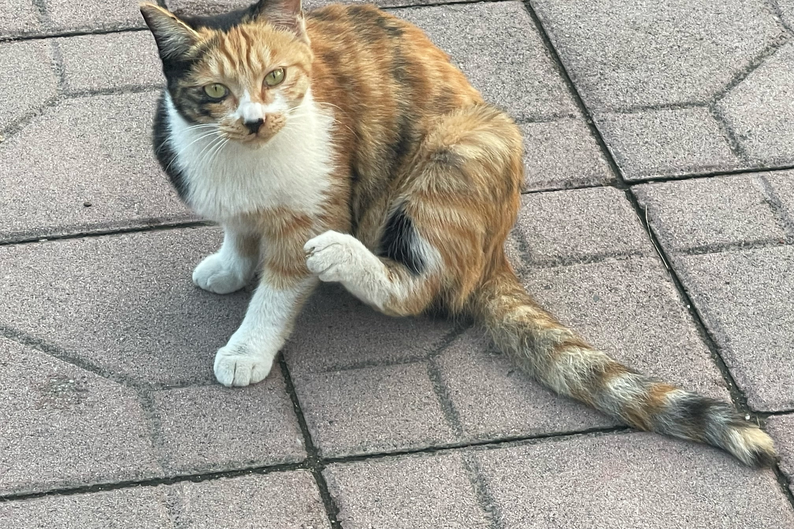
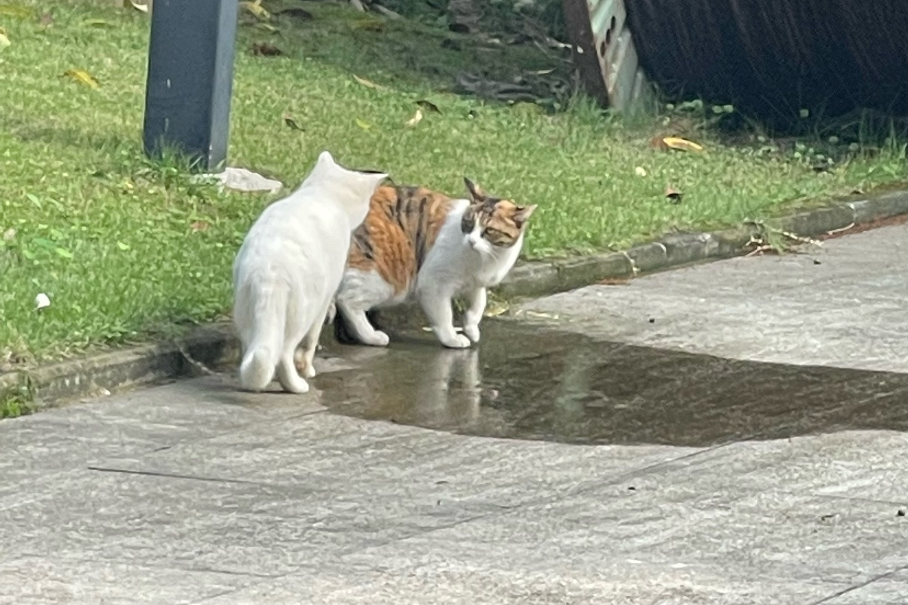
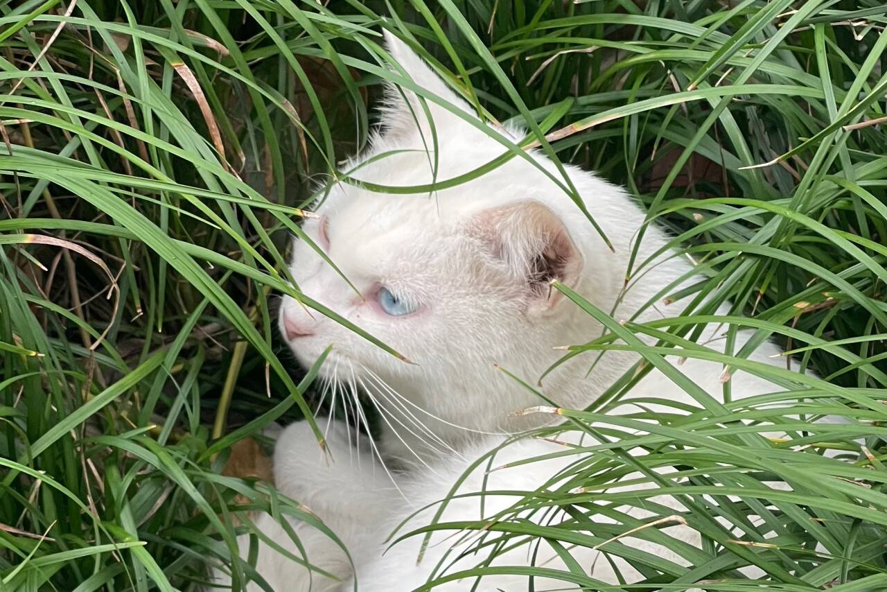
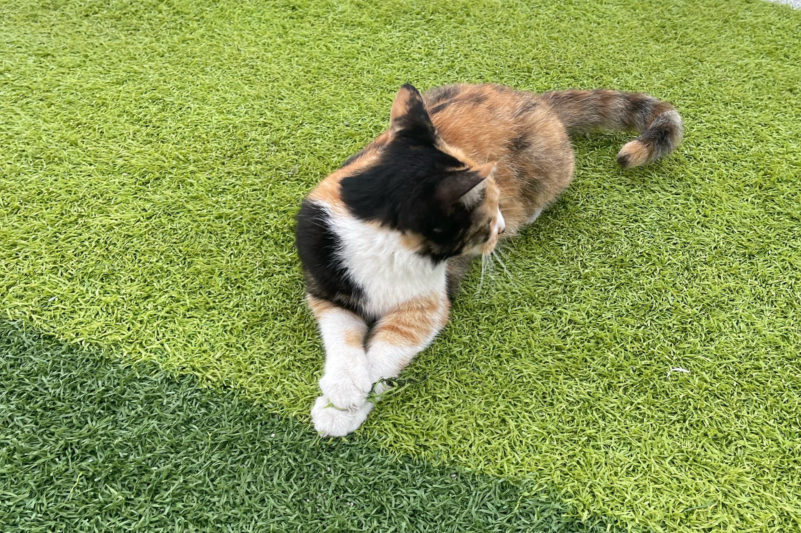

一些些校猫的猫片~





ABOUT
ME
我叫蒋州婷，来自四川成都
- 性格方面，我开朗活泼，待人真诚用心，介于i/e人之间，可灵活切换
- 兴趣爱好方面，听歌唱歌画画都很喜欢 但是是体育苦手一枚！
- 乐于探索和发现，喜欢尝试不同的事情，比如曾做过非常多种类的学生工作，并且对于自己未知的、新的技能与领域抱有求知欲
HOBBY
听歌 唱歌！都喜欢！右边这个是草地音乐节表演的视频 ❤我是粉色衣服，虽然不是很完美啦
平时会摸点小鱼 尝试新东西!!!
术
力
口